| 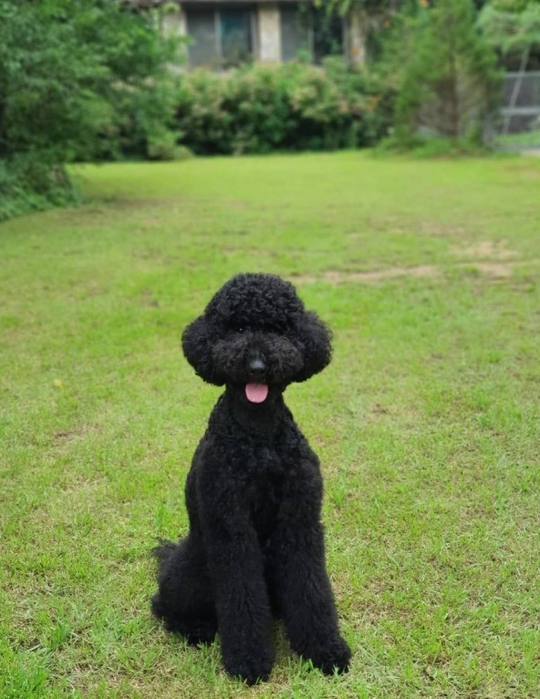 미니어처 푸들 활발하고 어떠한 생활방식에도 잘 어울리는 점잖은 강아지이다. |
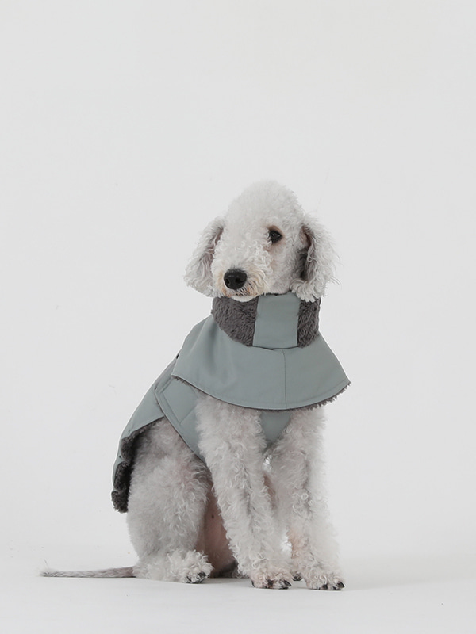 베들링턴 테리어 육이 발달되었고 운동신경이 우수하여 함께 운동하기에 적합하다. |
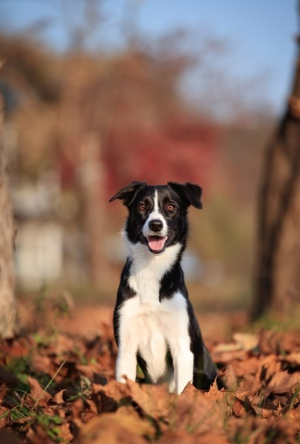 보더콜리 지능이 높고 끈기가 있으며 주인에게 순종하는 기질을 갖고 있다. |
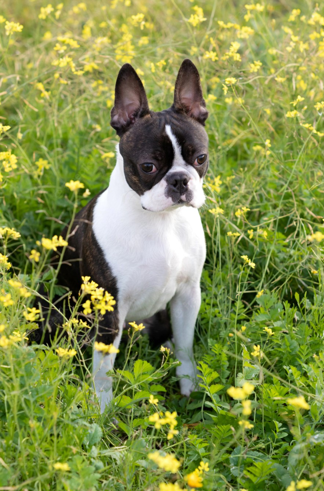 보스턴 테리어 매끄러운 피부에 머리 길이는 짧고 다부진 체형을 가졌다. |
| 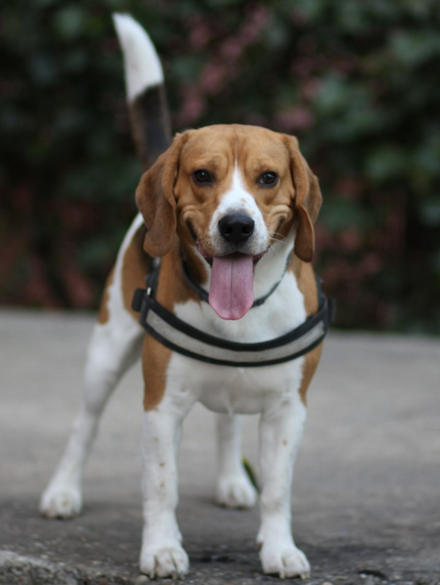 비글 활발하고 튼튼하며 다부진 체구를 가졌으며, 체력이 우수하고 투지가 넘친다. |
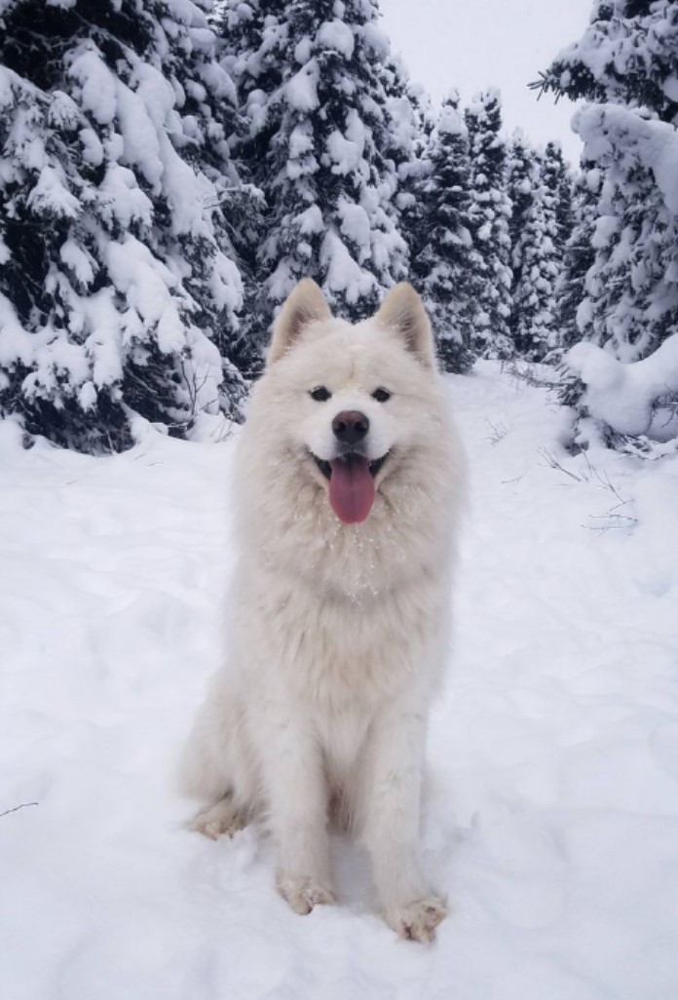 사모예드 북극 지역 흰색 스피츠로 사교성이 매우 뛰어나며 기민하고 친근하다. |
 셰틀랜드 쉽독 전체적으로 균형잡힌 체구이며, 움직임이 유연하고 우아하다. |
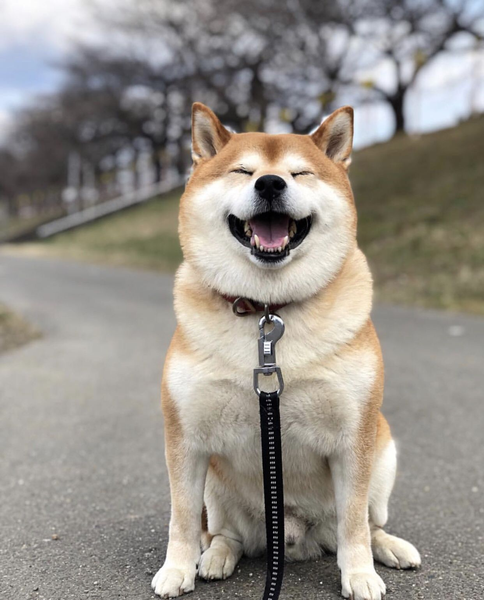 시바 이누 '시바''란 일본어로 '작은 것'을 뜻하며 일본의 천연기념물로 지정되었다. |
| 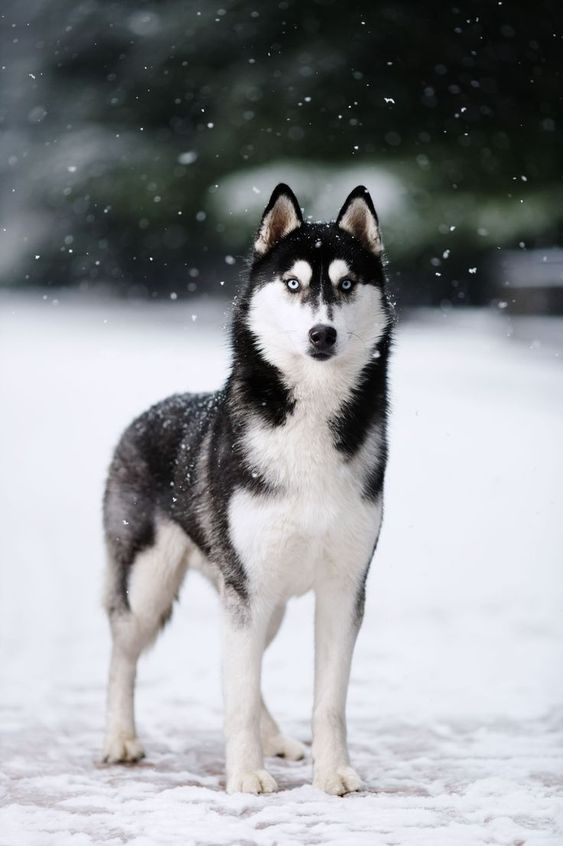 시베리안 허스키 쫑긋한 귀와 빗자루 같은 꼬리, 적당한 근육을 가졌다. |
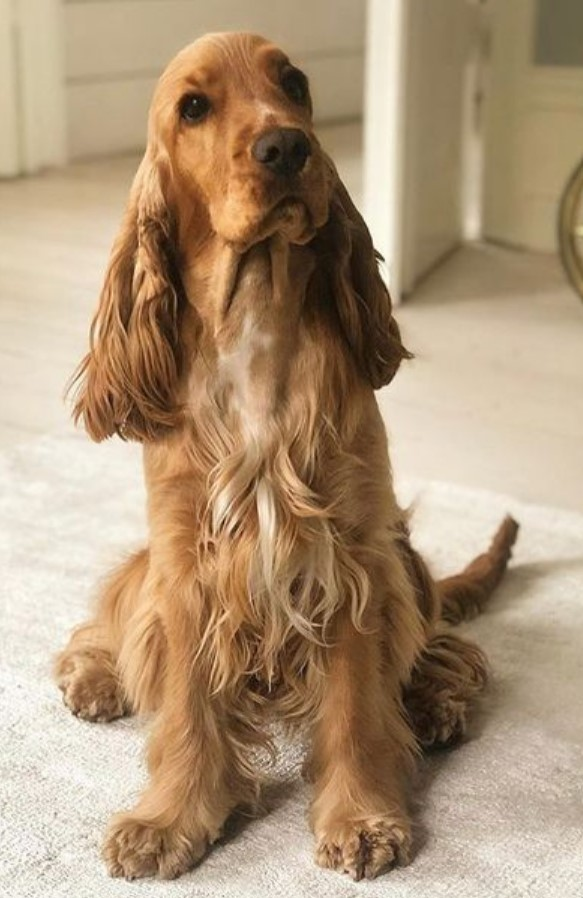 아메리칸 코카 스페니엘 낙천적이며 사람을 즐겁게 만들고 순종을 잘하는 성품이다 |
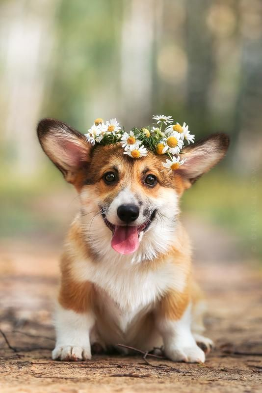 웰시 코기 소몰이를 할 정도로 운동량이 많은 개 이므로 많은 운동량을 필요로 한다. |
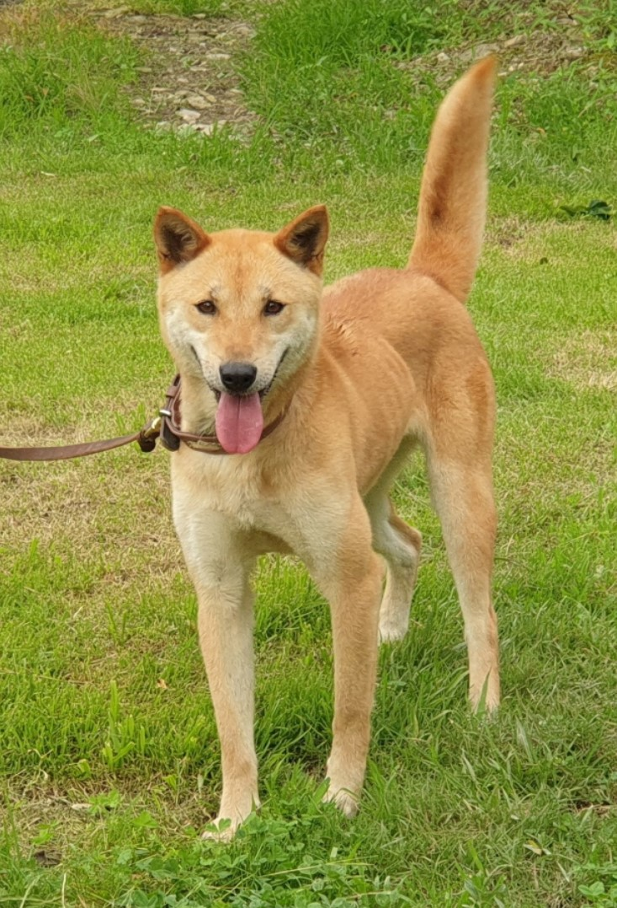 진돗개 주인에 대한 충성심과 복종심이 강하며 뛰어난 귀가성을 간직하고 있다. |